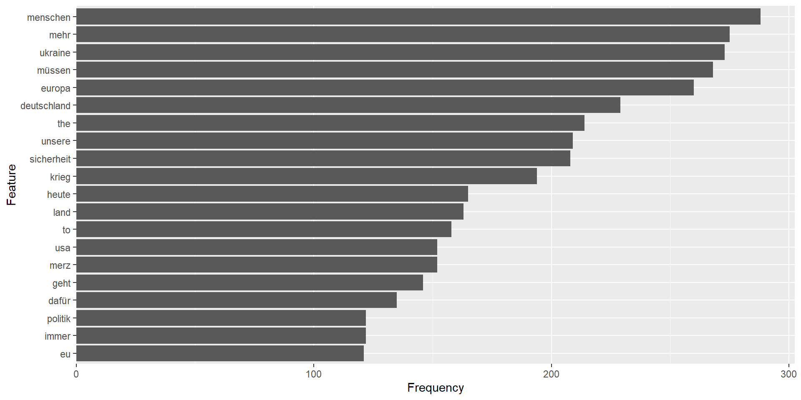
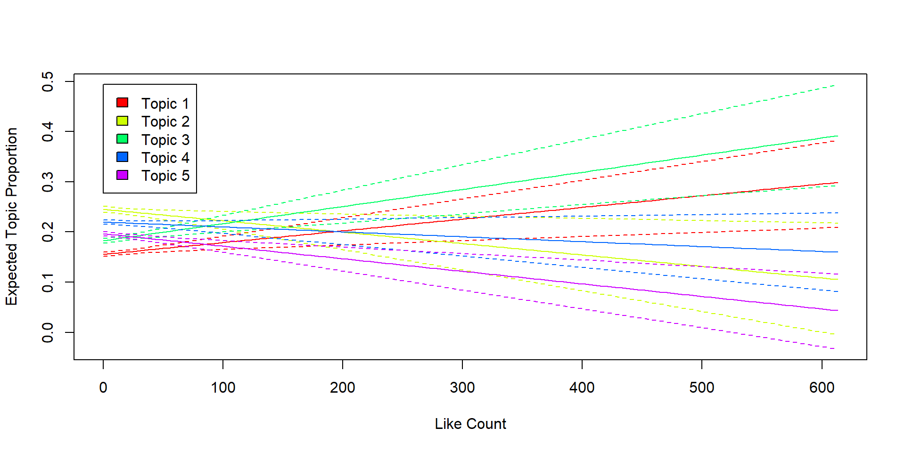

Sammlung von Social-Media-Daten mit R
Seminarsitzung 6
11. Juni 2026
Setup
Reminder: Buch zum Kurs 📖
Im Buch zum Kurs finden Sie ausführlichere Informationen zu den Themen, die wir in dieser Sitzung behandeln. Sie finden dieses online über den folgenden Link: https://jobreu.github.io/social-media-data-r/
Pakete
Für die Analyse der Daten von YouTube und Bluesky nutzen wir verschiedene Pakete. Sie können diese jeweils einzöeln installieren oder einmal gesammelt:
Pakete
Zusätzlich nutzen wir auch ein Pakets, das nur über GitHub verfügbar sind. Diese können wir mit einer Funktion aus dem Paket remotes installieren (zur Erinnerung: unter Windows benötigen wir hierfür auch die Rtools):
Daten
Für die Beispiele in dieser Sitzung verwenden wir Daten von Bluesky und YouTube. Wir gehen davon aus, dass diese gesammelt und als bluesky_data.csv bzw. youtube_data.csv lokal gespeichert wurden.
Ein Beispiel-Skript zur Sammlung solcher Daten ist im Skript collect_data.R zu finden.
Preprocessing
Was ist Preprocessing?
Preprocessing bezeichnet alle Schritte, die nötig sind, um die Daten für die Analyse vorzubereiten. Das Preprocessing für Textdaten (insb. solche aus Social Media) ist i.d.R. umfangreicher und Entscheidungen dazu sind einflussreicher als z.B. für Surveydaten, denn die Daten sind in aller Regel…
nicht für genuin die Forschung generiert (sog. „found data“)
unstrukturierter
heterogener
umfangreicher
Preprocessing von Textdaten
Bei der Aufbereitung von Textdaten gibt es entsprechend einige Harausforderungen. Zwei der wichtigsten sind hierbei:
Die Auswahl und Abfolge der Preprocessing-Schritte, da diese die Analyseergebnisse beeinflussen.
Der Umgang mit unterschiedlichen Textarten, -längen und Sprachen (sowie ggf. unterschiedlicher Zeichen)
Textdaten-Vokabeln 1
String: Ein String ist eine Folge von Zeichen, z.B. ein Wort, ein Satz oder ein ganzer Text.
Textkorpus: Ein Textkorpus ist eine Sammlung von Dokumenten. In unserem Fall also z.B. eine Sammlung von Bluesky-Posts oder YouTube-Kommentaren. Ein Textkorpus kann auch Metadaten zu den Dokumenten enthalten (im Social-Media-Kontext z.B. User Names oder Zeitstempel zur Veröffentlichung).
Dokument: Ein Dokument ist eine einzelne Einheit in einem Textkorpus. Für unseren Anwendungsfall also z.B. ein Bluesky-Post oder ein YouTube-Kommentar. Ein Dokument kann aus einem oder mehreren Strings bestehen.
Textdaten-Vokabeln 2
Token: Ein Token ist eine einzelne Einheit in einem Text, z.B. ein Wort, ein Satzzeichen oder ein Hashtag. Das Aufteilen eines Textes in Tokens wird als Tokenisierung bezeichnet.
Type: Ein Type ist ein einzigartiges Token. Wenn z.B. das Wort “Hallo” in einem Text dreimal vorkommt (“Hallo Hallo Hallo”), dann gibt es drei Tokens, aber nur einen Type (“Hallo”).
Vokabular: Das Vokabular ist die Menge aller Types in einem Textkorpus. In vorherigen Beispiel wäre das Vokabular also {“Hallo”}.
Document-Feature-Matrix (DFM) (auch Document-Term-Matrix; DTM): Eine DFM ist eine Matrix, in der die Zeilen Dokumente (z.B. Tweets, YouTube-Kommentare) und die Spalten Features (z.B. Wörter, Hashtags) darstellen. Die Werte in der Matrix geben an, wie oft ein bestimmtes Feature in einem bestimmten Dokument vorkommt.
Preprocessing-Schritte
Es gibt viele verschiedene mögliche Preprocessing-Schritte für Textdaten. Die Auswahl und Abfolge der Schritte hängt von verschiedenen Faktoren ab, z.B. von der Art der Daten, der geplanten Analyse und den Forschungsfragen. Schritte, die sehr häufig sinnvoll bzw. nötig sind:
Erstellung eines Textkorpus
Tokenisierung (tokenization)
Entfernung oder Extraktion bestimmter Muster oder Symbole (z.B. Zeichensetzung, Zahlen, Emoji, URLs…)
Kleinschreibung (lowercasing)
Entfernung von Stoppwörtern (stopword removal)
Erstellung einer Document-Feature-Matrix (DFM)
Erstellung eines Textkorpus: Bluesky
library(tidyverse)
library(quanteda)
bluesky_corpus <- bs_posts %>%
distinct(uri, .keep_all = TRUE) %>% # jeder Post sollte nur einmal im Korpus vorkommen
filter(is_reskeet == FALSE) %>% # keine Reposts
select(uri, cid,
author_handle, author_name,
indexed_at, reply_count, repost_count,
like_count, quote_count,
is_reskeet,
text) %>%
corpus(docid_field = "uri",
text_field = "text")Erstellung eines Textkorpus: YouTube
Tokenisierung & Muster/Symbole entfernen: Bluesky
Tokenisierung & Muster/Symbole entfernen: YouTube
Kleinschreibung & Entfernung von Stoppwörtern: Bluesky
Kleinschreibung & Entfernung von Stoppwörtern: YouTube
Erstellung einer Document-Feature-Matrix (DFM)
Deskriptive Auswertungen
Worthäufigkeiten: Bluesky
feature frequency rank docfreq group
1 menschen 288 1 258 all
2 mehr 275 2 251 all
3 ukraine 273 3 224 all
4 müssen 268 4 244 all
5 europa 260 5 234 all
6 deutschland 229 6 219 all
7 the 214 7 93 all
8 unsere 209 8 189 all
9 sicherheit 208 9 187 all
10 krieg 194 10 171 allWorthäufigkeiten: YouTube
feature frequency rank docfreq group
1 afd 411 1 341 all
2 deutschland 230 2 193 all
3 mehr 224 3 195 all
4 mal 206 4 188 all
5 ja 197 5 185 all
6 cdu 156 6 136 all
7 frau 154 7 139 all
8 schon 151 8 139 all
9 immer 140 9 134 all
10 merz 133 10 97 allVisualisierung von Worthäufigkeiten: Wortwolke
Visualisierung von Worthäufigkeiten: Balkendiagramm

Hashtags
feature frequency rank docfreq group
1 #ukraine 117 1 117 all
2 #trump 25 2 25 all
3 #putin 24 3 24 all
4 #iran 20 4 20 all
5 #köln 19 5 19 all
6 #taurus 16 6 16 all
7 #scholz 14 7 14 all
8 #klimaschutz 13 8 13 all
9 #sudan 12 9 12 all
10 #china 12 9 12 allKeyness-Analyse
Sentiment-Analyse
Was ist Sentiment-Analyse?
Die Sentiment-Analyse kommt für Social-Media-Daten häufig zum Einsatz. Ziel ist es dabei, die Stimmung oder Emotion in einem Text zu bestimmen, z.B. ob ein Post oder Kommentar positiv, negativ oder neutral ist. Bei der Sentiment-Analyse kommen zumeist sogenannte Diktionäre (dictionaries) zum Einsatz kommen.
Sentiment-Analyse mit quanteda.sentiment
quanteda.sentiment bietet verschiedene Diktionäre für die Setntimen-Analyse. Das ReadMe im GitHub-Repository zum Paket bietet eine Übersicht.
Sentiment-Analyse mit quanteda.sentiment: Beispiel
Im nachfolgenden Beispiel nutzen wir Diktionär für Sentiment in deutschen politischen Texten von Rauh (2018).
Sentiment-Analyse: Ergebnis
Rows: 2,555
Columns: 6
$ doc_id <chr> "at://did:plc:hngkefcientj2tq2gnspgfol/app.bsky.feed.pos…
$ neg_negative <dbl> 0, 0, 0, 0, 0, 0, 0, 0, 0, 0, 0, 0, 0, 0, 0, 0, 0, 0, 0,…
$ neg_positive <dbl> 0, 0, 0, 0, 0, 0, 0, 0, 0, 0, 0, 0, 0, 0, 0, 0, 0, 0, 0,…
$ negative <dbl> 3, 0, 1, 1, 1, 4, 2, 4, 2, 4, 1, 1, 1, 0, 4, 0, 2, 5, 0,…
$ positive <dbl> 6, 2, 1, 9, 4, 6, 3, 4, 1, 5, 0, 3, 1, 5, 0, 0, 2, 1, 3,…
$ net_sentiment <dbl> 3, 2, 0, 8, 3, 2, 1, 0, -1, 1, -1, 2, 0, 5, -4, 0, 0, -4…Verknüpfung von Sentiment mit Post-Daten
Posts mit hohem Nettosentiment
text
1 Herzlichen Glückwunsch an Yasmin Fahimi zur Wiederwahl als Vorsitzende des #DGB – und zu diesem starken Ergebnis! Viel Erfolg für den wichtigen Einsatz für gute Arbeit, soziale Gerechtigkeit und starken Zusammenhalt. Auf gute Zusammenarbeit weiterhin!\n\nwww.handelsblatt.com/politik/deut...
2 Wir wollen das Leben bezahlbar machen. Natur und Klima schützen. Die Wirtschaft stärken und nachhaltige Jobs schaffen. Frieden in Freiheit sichern und Vielfalt. Wir wollen, dass unser Land einfach funktioniert. Eine gute Zukunft für alle Kinder. #ZusammenWachsen\n\nwww.gruene.de/artikel/zusa...
3 Auch wenn noch nicht alle Stimmbezirke ausgezählt sind: Mehr als 40 Prozent Erststimmen sind ein tolles Ergebnis, über das ich mich riesig freue. Ganz herzlichen Dank allen, die mir Ihr Vertrauen geschenkt haben, und den vielen Wahlkämpferinnen und Wahlkämpfern für Euren großartigen Einsatz!
4 Weihnachten erinnert uns daran, wie wichtig Gemeinschaft, Nähe und Hoffnung sind. Gerade in herausfordernden Zeiten zählt dieser Zusammenhalt besonders. Ich wünsche Euch allen frohe Weihnachten und ein besinnliches Fest mit Euren Liebsten 🎄
5 Mit herzlichen Grüßen an all diejenigen, die Lust haben mitzumachen –\n\nbeim Einsatz für Klimaschutz, Vielfalt, Gleichberechtigung, eine moderne Wirtschaft, ein Leben, das bezahlbar ist & ein Land, das einfach funktioniert.\n\nLiebe Grüße auch an @britta-hasselmann.de beim DFB-Pokalfinale! 😎\n\n#ldknrw25
6 Unser Ziel ist es, die Wettbewerbsfähigkeit unserer Wirtschaft zu stärken und nachhaltige Investitionen zu fördern. Dieser Erfolg im Strompreisbereich ist ein Schritt in die richtige Richtung, um unsere Wirtschaft weiter zu stärken.
7 Hervorragende Initiative von Friedrich Merz. Das eingefrorene 🇷🇺 Vermögen zu nutzen, um €140 Mrd. für die Verteidigung der Ukraine zu mobilisieren, ist moralisch richtig & strategisch geboten. Es würde die Sicherheit Europas substanziell stärken.\nwww.ft.com/content/3aac...
8 43,82 Prozent sind es geworden. Wie ihr seht, freuen wir uns alle riesig über dieses tolle Ergebnis. Ganz herzlichen Dank an alle Wählerinnen & Wähler für das große Vertrauen! Jetzt heißt es anpacken - für unsere Region, für Deutschland & ein sicheres Europa!
9 Nichts von den US-Ankündigungen ist besonders überraschend. Aber sie machen einmal mehr deutlich, dass Europa seine Sicherheit selbst organisieren muss, wenn es bestehen will. Die Wiederherstellung von Sicherheit muss unbedingte Priorität der nächsten Bundesregierung sein.
10 Herzlichen Glückwunsch liebe Reem Alabali-Radovan zu Deiner neuen Aufgabe! Du übernimmst ein starkes Team und große Aufgaben: Globale Verantwortung wahrzunehmen, Armut zu bekämpfen und Perspektiven zu schaffen. Ich wünsche Dir viel Erfolg und eine glückliche Hand!
net_sentiment author_handle
1 12 katharinadroege.bsky.social
2 11 katharinadroege.bsky.social
3 10 nroettgen.bsky.social
4 10 nroettgen.bsky.social
5 10 katharinadroege.bsky.social
6 10 nouripour.bsky.social
7 9 nroettgen.bsky.social
8 9 nroettgen.bsky.social
9 9 nroettgen.bsky.social
10 9 svenjaschulze.bsky.socialPosts mit niedrigem Nettosentiment
text
1 Zwei Jahre ist es her, dass #JinaMahsaAmini vom Mullah-Regime brutal ermordet wurde, weil sie angeblich ihr Kopftuch falsch trug. Auch wenn sich das Regime seitdem mit Terror & Gewalt an der Macht hält, hat es die große Mehrheit der Menschen im Land längst verloren. Sie wollen Freiheit!
2 Der Terroranschlag in Jerusalem ist unfassbar grausam und erschütternd. Ich bin in tiefer Trauer in Gedanken bei den Verletzten und den Angehörigen der Opfer.
3 Ich bin bestürzt, dass der Polizeibeamte in #Mannheim seinen schweren Verletzungen erlegen ist. Mein tiefstes Beileid gilt Familie, Freund*innen und Kolleg*innen. Die furchtbare Tat gegen ihn und alle weiteren Verletzten wird mit der Härte des Rechtsstaates verfolgt werden.
4 Wir erleben gerade in Echtzeit, wie gefährlich unsere Abhängigkeiten von China sind. Firmen, auch im Rüstungsbereich, müssen ihre Produktion drosseln, weil Peking Exportkontrollen für wichtige Rohstoffe eingeführt hat. De-Risking ist zwingend notwendig. \n\nwww.handelsblatt.com/politik/inte...
5 Wir haben nicht den Luxus, dass es nur eine außenpolitische Herausforderung gibt: Auch die geopolitische Rivalität, die von #China ausgeht, beschäftigt uns. Wir werden das strategische De-Risiking von China jetzt endlich angehen. Wirtschaftliche Abhängigkeiten müssen reduziert werden.
6 Jamshid Sharmahd wurde entführt, gefoltert & hingerichtet. Man kann nur tiefste Abscheu vor dem Mullah-Regime empfinden. Bei aller Trauer muss man leider auch sagen, dass die 🇩🇪 Iranpolitik erneut gescheitert ist. Meine Gedanken sind bei Jamshids Familie, die so für sein Leben gekämpft hat.
7 Ich verurteile die Gewalt gegen Studenten und Demonstranten in Bangladesch. Die Versammlungsfreiheit ist ein Grundrecht in einer Demokratie. Die Regierung muss das harte Durchgreifen und die Abschaltung des Internets sofort beenden.
8 Auch unter der Vorgängerregierung herrschte wenig Interesse am Iran. Spätestens nachdem Teheran 2022 ein weiteres EU-Verhandlungsverbot ausschlug und die Revolution im eigenen Land brutal unterdrückte, hätte das Auswärtige Amt seinen Kurs wechseln müssen.
9 Sehr schade und enttäuschend, dass Grüne und FDP gegen den @cducsu.de Antrag zur sofortigen Lieferung von Taurus an die Ukraine gestimmt haben. Wenn sie ihre öffentlichen Aussagen ernst meinen, dann müssen sie jetzt selbst einen Antrag einbringen. Alles andere wäre unglaubwürdig.
10 Allein der Begriff „Lifestyle-Teilzeit“ ist unverschämt. Er erkennt die Lebensrealität vieler nicht an.\n\nAnstatt herablassend über die Menschen im Land zu sprechen, sollte die CDU endlich ihren Job machen. Das heißt auch, für mehr Kinderbetreuung und Pflegeplätze zu sorgen.
net_sentiment author_handle
1 -6 nroettgen.bsky.social
2 -6 katharinadroege.bsky.social
3 -6 katharinadroege.bsky.social
4 -5 nroettgen.bsky.social
5 -5 nroettgen.bsky.social
6 -5 nroettgen.bsky.social
7 -5 nroettgen.bsky.social
8 -5 nroettgen.bsky.social
9 -5 nroettgen.bsky.social
10 -5 katharinadroege.bsky.socialTopic Models
Was sind Topic Models?
Topic Modeling ist eine Methode aus der Kategorie des Unsupervised Machine Learning, mit der versucht wird, Themen in einem Textkorpus zu identifizieren (siehe hierzu auch den entsprechenden.
Themen sind Mischungen aus Wörtern: Ein Thema ist eine Ansammlung von Wörtern mit unterschiedlichen Wahrscheinlichkeiten. Beim Thema „Sport“ ist die Wahrscheinlichkeit, dass das Wort „Ball“ vorkommt, hoch, während die Wahrscheinlichkeit für das Wort „Demokratie“ sehr gering ist.
Dokumente sind Mischungen aus Themen: Ein einzelnes Dokument kann mehrere Themen enthalten. Ein Zeitungsartikel könnte z.B. zu 60 % aus Sport, zu 30 % aus Finanzen und zu 10 % aus Politik bestehen.
LDA
Die älteste und am weitesten verbreitete Methode für die Topic-Modellierung ist die Latent Dirichlet Allocation (LDA). Diese ist im R-Paket topicmodels (Grün & Hornik, 2011) implementiert.
LDA: Vorbereitung
Um die Berechnung des Topic Models etwas zu beschleunigen, reduzieren wir die Anzahl der Wörter in der DFM , indem wir nur Wörter behalten, die in mindestens 5 Posts bzw. Kommentaren enthalten sind. Im Gegensatz zu den vorheringen Analysen behalten wir allerdings die Hashtags für die Topic Models.
LDA: Berechnung
k <- 5 # Anzahl der Themen
# LDA für YouTube
lda_yt <- LDA(convert(dfm_youtube_trimmed,
to = "topicmodels"), # LDA erwartet eine DFM im Format des Pakets topicmodels, daher müssen wir die DFM mit convert() umwandeln
k = k,
control = list(seed = 1234)) # Setzen eines Seeds für Reproduzierbarkeit
terms(lda_yt, 10) # Ausgabe der 10 wahrscheinlichsten Wörter pro Thema Topic 1 Topic 2 Topic 3 Topic 4 Topic 5
[1,] "deutschland" "frau" "wählen" "mal" "afd"
[2,] "mehr" "immer" "einfach" "cdu" "bsw"
[3,] "land" "baerbock" "wer" "ja" "parteien"
[4,] "macht" "weidel" "menschen" "merz" "wähler"
[5,] "ganz" "leute" "schon" "csu" "linke"
[6,] "klar" "gibt" "spiegel" "grünen" "wäre"
[7,] "warum" "bitte" "gehen" "ukraine" "berlin"
[8,] "jahre" "genau" "geht" "krieg" "spd"
[9,] "recht" "viele" "geld" "schon" "demokratie"
[10,] "geht" "leider" "linken" "partei" "wahl" STM
Eine Weiterentwicklung von LDA ist das Structural Topic Model (STM), welches im R-Paket stm (Roberts et al., 2019) implementiert ist. STM ermöglicht es, externe Variablen bzw. Metadaten zu Dokumenten (z.B. Autor:innen, Zeit, Parteizugehörigkeit) direkt in die Berechnung der Themen einzubeziehen. Dies kann die Identifikation von Themen verbessern und ermöglicht es, die Beziehung zwischen Themen und diesen Variablen zu untersuchen.
STM: Beispiel
# DFM in STM-Format umwandeln
stm_data <- convert(dfm_youtube_trimmed, to = "stm")
# STM berechnen
stm_model <- stm(documents = stm_data$documents,
vocab = stm_data$vocab,
K = 5,
prevalence = ~ LikeCount,
data = stm_data$meta,
seed = 1234,
verbose = FALSE)
# Top Wörter pro Thema
labelTopics(stm_model)Topic 1 Top Words:
Highest Prob: mehr, cdu, wählen, parteien, leute, ganz, wahl
FREX: mehr, wählen, parteien, wahl, egal, union, richtig
Lift: anna-lena, arsch, art, durchaus, einseitige, euro, fest
Score: mehr, cdu, wählen, grad, parteien, wahl, leute
Topic 2 Top Words:
Highest Prob: deutschland, immer, wer, weidel, geht, land, wähler
FREX: wer, land, linke, klar, besser, sagt, jahren
Lift: auge, bereichen, diplomatische, dr, gehirn, glaube, hält
Score: deutschland, gottes, außenministern, gegensatz, wer, geht, land
Topic 3 Top Words:
Highest Prob: baerbock, spd, csu, berlin, grünen, wurde, demokratie
FREX: baerbock, berlin, grünen, demokratie, wirklich, welt, politiker
Lift: anfang, anna, besten, dobrint, dumme, dummheit, eingeladen
Score: baerbock, spd, berlin, schaden, csu, demokratie, grünen
Topic 4 Top Words:
Highest Prob: afd, ja, frau, schon, merz, menschen, bsw
FREX: merz, bsw, gibt, russland, jahre, ja, dabei
Lift: flüchtlinge, mauer, schlimme, schluss, weitsicht, behandelt, berichterstattung
Score: afd, merz, ja, weder, schon, frau, bsw
Topic 5 Top Words:
Highest Prob: mal, einfach, partei, gewählt, krieg, gar, regierung
FREX: mal, partei, gewählt, krieg, nie, bekommen, gesagt
Lift: aken, bedeutet, bild, bleibt, darüber, dazwischen, debatte
Score: mal, ost, einfach, partei, krieg, gewählt, geld STM: Beziehung zwischen Themen und Variablen
# Effekt des Like Counts auf die Themenzuordnung schätzen
effect <- estimateEffect(1:5 ~ LikeCount, stm_model, meta = stm_data$meta)
# Effekt plotten (hier mit base R)
plot(effect,
covariate = "LikeCount",
topics = 1:5,
model = stm_model,
method = "continuous",
xlab = "Like Count",
ylab = "Expected Topic Proportion")
Weitere Optionen für Topic Models
Ausblick
Nächste Sitzungen
ab nächster Sitzung am 18.06.: Gruppenarbeit
Vorschlag: 3-4 Gruppen à 3-4 Personen
Aufgabe am 18.06.: Entwicklung einer Forschungsfrage und Formulierung eines ersten Plans für die Sammlung, Aufbereitung und Analyse der Daten
Vorstellung der Ideen in Kurzpräsentationen (5-10 Minuten) in der Sitzung am 25.06.
Hinweis bzw. Erinnerung: Die Sitzung am 18.06. wird nicht durch den Dozenten betreut
References